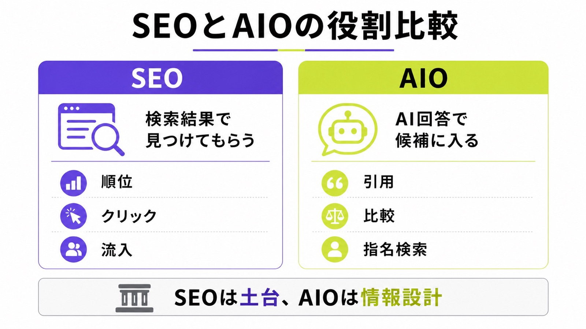
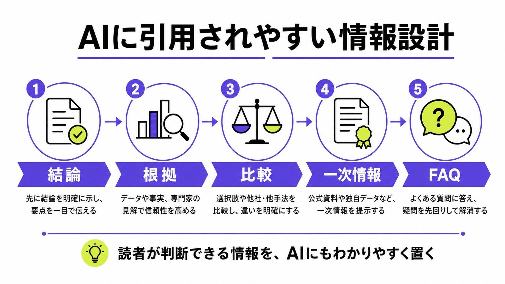
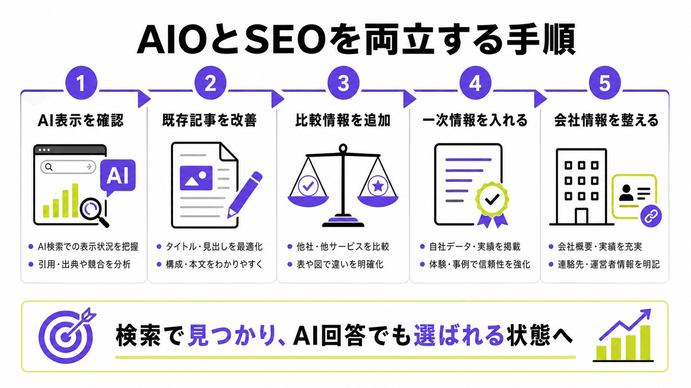

AIOとSEOの違いとは？AI検索時代に必要な対策を
わかりやすく解説

AIOとSEOは、どちらもWeb集客に関わる施策ですが、目的は同じではありません。
SEOは、Googleなどの検索エンジンでページを見つけてもらい、検索結果からクリックを獲得するための施策です。一方でAIOは、AI OverviewsやAI Mode、ChatGPT、Gemini、ClaudeなどのAI回答の中で、自社サイトや自社サービスが引用・参照される状態を目指す施策です。
ただし、AIOはSEOの代替ではありません。AI検索に表示されるためにも、まずは検索エンジンにページが正しく認識され、信頼できる情報として扱われる必要があります。この記事では、AIOとSEOの違い、両者の関係、AI検索時代に必要なコンテンツ設計を解説します。
目次

AIOとSEOの違い
AIOとSEOの違いをひとことで言えば、SEOは「検索結果で見つけてもらうための施策」、AIOは「AI回答の中で引用・参照されるための施策」です。
従来のSEOでは、ユーザーが検索し、検索結果を見て、気になるページをクリックする流れが中心でした。しかしAI検索では、ユーザーがサイトを訪問する前に、AI回答の中で情報の要約・比較・候補選定が進みます。
そのため、これからのWeb集客では「検索順位で上がること」だけでなく、「AIの回答内で候補に入ること」も重要になります。
| 比較項目 | SEO | AIO |
|---|---|---|
| 主な目的 | 検索結果で上位表示され、クリックを獲得する | AI回答内で引用・参照され、候補として認識される |
| 対象 | Google検索、Bing検索など | AI Overviews、AI Mode、ChatGPT、Gemini、Claudeなど |
| 重視される情報 | 検索意図、タイトル、見出し、本文、内部リンク、被リンク | 明確な回答、一次情報、比較情報、根拠、FAQ、会社情報 |
| 成果指標 | 検索順位、CTR、自然検索流入、CV | AI回答への表示、引用、指名検索、問い合わせ、ブランド想起 |
| 関係性 | 土台になる施策 | SEOの上に重ねる情報設計 |

SEOは、検索エンジンにページを理解してもらうための土台です。AIOは、その土台の上で、AIが回答を作るときに使いやすい情報を整える施策です。
AIOとは？
AIOは、文脈によって意味が分かれやすい言葉です。GoogleのAI Overviewsを略してAIOと呼ぶ場合もあれば、AI Optimization、つまりAI検索に対する最適化という意味で使われる場合もあります。
この記事では、AIOを「AI検索やAI回答に引用・参照されるための対策」として扱います。
AIOで重要なのは、AIに向けて特殊な文章を書くことではありません。AIが回答を作るときに参照しやすい情報を、Webサイト内に持たせることです。AIO対策を外部に頼む場合の見方は、AIO対策会社おすすめ11選でも整理しています。
AIOはAI検索で選ばれるための情報設計
AIO対策では、単に記事を増やすだけでは不十分です。
AIは、ユーザーの質問に対して、複数の情報源をもとに回答を組み立てます。そのときに使いやすいのは、結論が明確で、根拠があり、比較しやすく、誰が発信しているかがわかる情報です。
具体的には、次のような情報が重要になります。
- 質問に対する明確な回答
- 根拠のある説明
- 料金や選び方の判断材料
- 他社や他サービスとの比較
- 実績、事例、独自データ
- 著者情報、運営会社情報
- よくある質問とその回答
AI検索では、「おすすめは？」「違いは？」「どちらがいい？」といった比較・判断系の質問が増えます。だからこそ、単なる説明記事ではなく、AIが候補選定に使いやすい情報まで用意しておく必要があります。
AI検索では検索体験そのものが変わる
従来の検索では、ユーザーが複数のページを開き、自分で比較して判断していました。
AI検索では、その比較作業の一部をAIが代行します。AIが複数のページを参照し、要点をまとめ、選択肢を提示するため、サイトに訪問される前の段階で候補から外れる可能性があります。
GEOに関する研究でも、生成AI検索ではコンテンツ制作者が、表示タイミングや表示方法をほとんど制御できないと指摘されています。
little to no control over when and how their content is displayed.
この点が、従来のSEOとの大きな違いです。SEOでは検索順位やクリック率を改善すれば成果につながりやすかった一方で、AIOではAI回答内でどのように扱われるかまで考える必要があります。
SEOとは？
SEOは、Search Engine Optimizationの略で、日本語では検索エンジン最適化と呼ばれます。
SEOの目的は、検索エンジンにページの内容を正しく理解してもらい、検索結果で見つけてもらうことです。検索結果で上位表示されれば、自然検索からの流入や問い合わせにつながりやすくなります。
AI検索が広がっても、SEOの重要性はなくなりません。むしろ、AI検索に表示されるためにも、SEOの基本が必要になります。
SEOは検索流入を増やすための基本施策
SEOでは、検索ユーザーの意図に合うページを作り、Googleに正しくクロール・インデックス・評価してもらうことを目指します。
主な施策は次のとおりです。
- 検索意図に合う記事構成を作る
- タイトルや見出しを最適化する
- 本文でユーザーの疑問に答える
- 内部リンクを整える
- サイト構造をわかりやすくする
- ページ表示速度やモバイル対応を改善する
- 著者情報や運営者情報を明確にする
- 信頼できる外部サイトから言及やリンクを得る
SEOは、検索エンジン向けのテクニックだけではありません。ユーザーが知りたい情報に早くたどり着けるように、サイト全体を整える取り組みでもあります。
AI検索でもSEOの土台は必要
Googleは、生成AI検索においてもSEOの基本施策が引き続き重要だと明記しています。
Google Search Centralは、生成AI検索においてSEOが今も重要かという問いに対し、“In short, yes!”と回答しています。その理由として、Google検索の生成AI機能は、Googleの中核的な検索ランキングシステムと品質システムを土台にしているためです。
参考：Google Search Central｜AI features and your website
参考：Google Search Central｜AI Optimization Guide
つまり、AI検索だからといって、SEOを無視してよいわけではありません。
ページがクロールされない、インデックスされない、検索結果で表示対象にならない。そのような状態では、AI検索で引用・参照される可能性も高まりません。
AIO対策は、SEOの上に重ねる施策です。まずSEOで検索エンジンに認識される状態を作り、そのうえでAIが使いやすい情報設計を追加する流れが現実的です。
AIOとSEOの主な違い
AIOとSEOは重なる部分もありますが、見ている成果地点が異なります。
SEOは、検索結果で上位表示され、クリックされることを重視します。一方でAIOは、AI回答内で情報が使われ、比較候補に入り、最終的に指名検索や問い合わせにつながることを重視します。
この違いを理解しないまま、従来のSEO記事だけを増やしても、AI検索時代には成果が伸びにくくなる可能性があります。
目的が違う
SEOの目的は、検索結果で上位表示され、クリックを獲得することです。
一方でAIOの目的は、AI回答の中で自社の情報が引用・参照されることです。AI回答内で自社名やサービス名が出れば、ユーザーがサイトに訪問する前の段階で認知や比較候補に入る可能性があります。
つまり、SEOは「検索結果で選ばれる対策」、AIOは「AI回答で候補に残る対策」です。
成果指標が違う
SEOでは、検索順位、クリック率、自然検索流入、コンバージョン数などを見ます。
AIOでは、それだけでは足りません。AI回答に自社名が出ているか、自社サイトが引用されているか、比較候補に入っているか、指名検索が増えているか、問い合わせにつながっているかまで見る必要があります。
Google Search Consoleでは、AI OverviewsやAI Mode経由の表示・クリックも検索パフォーマンスの「Web」検索タイプに含まれます。ただし、AI Overviewsだけを独立した専用レポートとして細かく確認できるわけではありません。
参考：Google Search Central｜AI features and your website
そのため、AIOの成果を見るには、Search Consoleだけでなく、実際のAI回答の目視確認、指名検索の変化、問い合わせ内容の変化も合わせて見る必要があります。
コンテンツの作り方が違う
SEO記事では、検索キーワードに対して必要な情報を網羅することが重視されます。
AIOでは、網羅性に加えて「AIが回答に使いやすいか」が重要になります。
たとえば、「AIO SEO 違い」というテーマであれば、単にAIOとSEOの意味を説明するだけでは弱いです。読者は、次のようなことまで知りたいはずです。
- SEOはもう不要なのか
- AIO対策では何をすればいいのか
- AIOとLLMO、GEOは何が違うのか
- AI Overviewsに出るための専用タグはあるのか
- 既存記事をどう直せばいいのか
このような関連疑問まで先回りして答えることで、人間にもAIにも理解されやすいページになります。
SEOはもう不要なのか
SEOは不要ではありません。
AI検索が広がると、「検索結果を見ずにAI回答だけで満足するユーザー」が増える可能性はあります。しかし、AI回答の裏側でも、検索エンジンがページを発見し、内容を理解し、信頼できる情報を選ぶ流れは残ります。
そのため、SEOが終わるのではなく、SEOに求められる役割が広がると考えるべきです。
AIOはSEOの代替ではない
AIOは、SEOの代わりになるものではありません。
SEOでサイトの土台を作り、その上にAIO向けの情報設計を重ねるイメージです。
クロールされない、インデックスされない、本文が薄い、運営者情報が弱い、比較情報がない。このような状態でAIOだけを意識しても、AI検索で選ばれる可能性は高まりません。
まずはSEOの基本を押さえる。次に、AIが引用しやすい情報を追加する。この順番が重要です。
SEO記事の作り方は変える必要がある
SEOが不要になったわけではありませんが、従来型のSEO記事だけでは弱くなっています。
検索上位記事を見て、似たような見出しを並べ、一般論をまとめるだけの記事は、AI検索時代には価値が出にくくなります。AIでも作れる内容は、AI回答に吸収されやすく、わざわざサイトに訪問する理由も薄くなります。
これから重要になるのは、次のような情報です。
- 自社の経験にもとづく見解
- 実際の支援事例
- 具体的な比較基準
- 独自の調査結果
- 現場でしかわからない注意点
- 失敗例と改善策
- サービス提供者としての判断基準
Googleも、生成AI検索においては「独自で価値のあるコンテンツ」を重視しています。Google Search Centralは、他のサイトの情報を再利用するだけでなく、自分の知識や経験にもとづいて作ることを推奨しています。
参考：Google Search Central｜AI Optimization Guide
つまり、AI検索時代のSEOでは「上位記事の焼き直し」ではなく、「AIが参照する理由のある独自情報」が必要になります。LLMO全体の進め方は、LLMO対策とは？SEOとの違いと実践方法でも解説しています。
AIO対策で重要なコンテンツ設計
AIO対策では、AIが理解しやすい文章にするだけでは不十分です。
重要なのは、ユーザーが判断するために必要な情報を、AIにも人間にもわかりやすい形で配置することです。特に、結論、根拠、比較、一次情報、FAQ、会社情報は重要になります。

結論を先に書く
AIO対策では、各見出しの冒頭で結論を明確に書くことが重要です。
「AIOとSEOは似ていますが、少し違います」と曖昧に始めるよりも、「AIOはAI回答で引用されるための対策、SEOは検索結果で見つけてもらうための対策です」と先に言い切った方が、読者にもAIにも伝わりやすくなります。
結論、理由、具体例の順番で書くと、情報の抜き出しやすさが高まります。
比較表を入れる
違いを説明するテーマでは、比較表が有効です。
AIOとSEOの違い、AIOとLLMOの違い、AIOとGEOの違い、SEO記事とAIO向け記事の違いなどは、文章だけで説明するよりも表にした方が理解されやすくなります。
AI検索では、比較や選定の文脈で情報が使われることが多いため、比較表はAIOと相性のよい形式です。
一次情報を入れる
AI検索に選ばれるには、他サイトにもある一般論だけでは不十分です。
自社の実績、支援事例、調査結果、顧客の声、実際に使ったツール、運用でわかった注意点などを入れることで、ページ独自の価値が生まれます。
たとえば、AIO対策会社の記事であれば、「AIO対策とは何か」だけでなく、実際にどのような質問でAI回答を確認したのか、どの競合が出ていたのか、どのページを改善したのかまで書くと、一般論から一段深い記事になります。
FAQを充実させる
FAQは、AIO対策と相性のよい要素です。
ユーザーがAIに質問する内容は、通常の検索キーワードよりも会話的になります。たとえば、次のような質問です。
- AIOとSEOはどちらを優先すべきですか？
- AI Overviewsに表示されるには何が必要ですか？
- AIO対策に構造化データは必要ですか？
- SEO記事をAIO向けに改善できますか？
- LLMOやGEOとは何が違いますか？
このような質問に対して、短く明確に答えることで、AIにも読者にも使いやすいページになります。
会社情報と著者情報を明確にする
AIO対策では、コンテンツ単体だけでなく、誰が発信している情報なのかも重要です。
運営会社、著者、専門領域、実績、問い合わせ先、サービス内容が曖昧なサイトは、信頼性を判断しづらくなります。
とくにBtoBサービスでは、会社概要、代表者情報、支援実績、料金、対応範囲、事例ページ、FAQ、問い合わせ導線まで整えておく必要があります。
AIO対策でやってはいけないこと
AIO対策という言葉が広がると、AIに選ばれるための裏技や抜け道を探す動きも増えます。
しかし、AI検索に強いサイトを作るうえで重要なのは、AIをだますことではありません。ユーザーにとって価値があり、AIにも正しく理解される情報を整えることです。
短期的なテクニックに寄りすぎると、かえって評価を落とす可能性があります。
AIで大量生成しただけの記事を増やす
AIを使って記事を作ること自体は問題ではありません。
ただし、AIで一般論を大量生成し、ユーザーに価値を加えないページを増やす行為は危険です。Googleは、生成AIを使って多数のページを作る場合でも、ユーザーに価値を加えなければスパムポリシーに違反する可能性があるとしています。
参考：Google Search Central｜Using generative AI content on your website
AIは、リサーチや構成作成、文章のたたき台には使えます。しかし、最終的には人間の経験、判断、具体例、責任ある情報設計を加える必要があります。
価値のない量産ページを作る
地域名やキーワードだけを変えたページを大量に作る、他サイトの情報をつなぎ合わせる、生成AIで一般論だけの記事を増やす。このような施策は長期的に弱くなります。
AIO対策でもSEO対策でも、ページ数そのものが強さになるわけではありません。
重要なのは、ユーザーがそのページを読んで判断できるだけの情報があるかどうかです。
AI回答を操作するためだけの施策を行う
AIO対策では、AIに選ばれることを目指します。しかし、AI回答を不自然に操作しようとする施策は避けるべきです。
たとえば、実体のないランキング記事を量産する、根拠のない比較表を作る、不自然な言及を増やす、といった施策です。
AI検索時代に必要なのは、AIに都合よく見せることではありません。ユーザーが意思決定できるだけの情報を、わかりやすく、信頼できる形で公開することです。
AIOとLLMO・GEO・AEOの違い
AIOの周辺には、LLMO、GEO、AEOなど似た言葉があります。
これらは完全に同じ意味ではありませんが、実務上は重なる部分が多いです。どの言葉を使うかよりも、「AI回答の中でどのように認識され、引用され、候補に入るか」を考えることが重要です。
AIOとLLMOの違い
AIOは、AI検索やAI回答への最適化を広く指す言葉として使われます。
LLMOは、Large Language Model Optimizationの略として使われることが多く、大規模言語モデルに引用・参照される状態を作る施策を指します。
AIOは「AI検索全体への最適化」、LLMOは「大規模言語モデルに選ばれるための最適化」と考えるとわかりやすいです。
AIOとGEOの違い
GEOは、Generative Engine Optimizationの略で、生成AIエンジンに対する最適化を意味します。
Googleは、AEOやGEOという用語がAI検索での可視性向上を表す言葉として使われていることに触れたうえで、Google検索の観点では生成AI検索への最適化も検索体験への最適化であり、SEOの一部として捉えられると説明しています。
参考：Google Search Central｜AI Optimization Guide
つまり、Google検索に限れば、AIOやGEOをSEOと完全に切り離して考える必要はありません。
用語よりも重要なのは情報設計
AIO、LLMO、GEO、AEOのどの言葉を使うかよりも、実際に何を整えるかの方が重要です。
重要なのは、AIが回答を作るときに参照しやすい情報を持つことです。
- 誰が発信しているのか
- 何に詳しいのか
- どのような実績があるのか
- 他社と何が違うのか
- どのような課題を解決できるのか
- 料金や選び方の判断材料はあるのか
- ユーザーの疑問に明確に答えているか
このような情報が整っていないサイトは、AI検索時代に選ばれにくくなります。
AIOとSEOを両立する具体的な手順
AIOとSEOを両立するには、新しい記事を増やす前に、まず現在の検索結果とAI回答で自社がどう見えているかを確認する必要があります。
そのうえで、既存記事の改善、新規記事の設計、会社情報やサービスページの強化を進めます。

主要キーワードでAI表示を確認する
まずは、自社にとって重要なキーワードを実際に検索し、AI Overviewsが表示されるかを確認します。
表示される場合は、どのサイトが引用されているか、どのような情報が使われているか、自社が候補に入っているかを見ます。
さらに、ChatGPT、Gemini、Claudeなどでも同じような質問を投げて、自社名や競合名が出るかを確認します。自社サイトの見え方を先に確認したい場合は、無料LLMO診断から始める方法もあります。
既存記事に明確な回答を追加する
既存記事をAIO向けに改善するなら、まず各見出しの冒頭に明確な回答を追加します。
たとえば、「AIOとSEOの違い」という見出しなら、最初に「AIOはAI回答に引用されるための対策、SEOは検索結果で見つけてもらうための対策です」と書きます。
回りくどい導入を減らし、読者がすぐに答えを理解できる構成にします。
比較・選び方・注意点を強化する
AI検索では、ユーザーが比較や判断をAIに任せる場面が増えます。
そのため、単なる説明記事ではなく、比較表、選び方、注意点、失敗例、向いているケース、向いていないケースまで入れることが重要です。
とくにサービスページや比較記事では、次の情報を入れるとAIにも読者にも伝わりやすくなります。
- 料金相場
- 対応範囲
- 得意分野
- 支援実績
- 契約形態
- 向いている企業
- 依頼前に確認すべきこと
一次情報と実績を追加する
AIO対策では、他サイトにもある情報をまとめるだけでは弱いです。
自社でしか出せない情報を入れます。
たとえば、支援事例、制作実績、顧客の課題、改善前後の変化、独自調査、現場で得た知見などです。
SEO時代は、検索上位記事を参考にして網羅性を高めるだけでも一定の成果が出ることがありました。しかしAI検索時代は、一般論だけの記事ほどAI回答に吸収されやすくなります。独自性のある情報を持つことが、AIOでもSEOでも重要になります。
会社情報・サービス情報を整える
AIに自社を正しく認識してもらうには、サイト内の会社情報やサービス情報も重要です。
会社概要、代表者情報、サービス内容、料金、実績、事例、FAQ、問い合わせページがバラバラだと、AIもユーザーも判断しづらくなります。
とくにBtoBでは、記事だけでなく、サイト全体の情報設計を見直す必要があります。
AIO対策に特別なタグやllms.txtは必要か
AIO対策というと、llms.txtやAI向けマークアップ、特殊な構造化データを想像する人もいます。
しかし、Google検索に限れば、AI OverviewsやAI Modeに表示されるための特別なタグや専用ファイルは必要ありません。
まず優先すべきなのは、特殊なファイルを作ることではなく、検索エンジンにもユーザーにも理解されやすいページを作ることです。
Google検索では特別なAI向けファイルは不要
Googleは、生成AI検索に表示されるために、新しい機械可読ファイル、AI向けテキストファイル、特別なマークアップ、専用のschema.org構造化データは不要だと説明しています。
参考：Google Search Central｜AI Optimization Guide
そのため、llms.txtや特殊なマークアップを作ることだけに時間をかけるよりも、まずはコンテンツの中身を強くするべきです。
構造化データ自体はSEO施策として有効
AI検索専用の構造化データは不要ですが、構造化データそのものが不要という意味ではありません。
リッチリザルトの対象になる構造化データは、従来のSEO施策として有効です。商品、FAQ、レビュー、組織情報など、検索結果での表示改善に役立つものは引き続き活用できます。
ただし、「AI検索に出るための裏技」として構造化データを入れるのではなく、検索エンジンとユーザーに情報を正しく伝えるために使うことが重要です。
AIOとSEOに関するよくある質問
AIOとSEOは新しいテーマのため、用語の意味や優先順位で迷いやすい領域です。
ここでは、AIOとSEOの違いを理解したうえで、実務で判断しやすいようによくある質問に答えます。
AIOとSEOはどちらを優先すべきですか？
まずSEOを優先すべきです。
サイトがクロールされない、インデックスされない、検索エンジンに内容を理解されない状態では、AI検索でも参照されにくくなります。
SEOの土台を作ったうえで、AIO向けに明確な回答、比較表、FAQ、一次情報、会社情報を追加する流れが現実的です。
AIO対策だけで検索流入は増えますか？
AIO対策だけで検索流入が増えるとは限りません。
AI回答に表示されても、ユーザーがクリックしないケースもあります。一方で、AI回答内で自社名が認識され、指名検索や問い合わせにつながる可能性もあります。
そのため、検索順位や流入数だけでなく、AI回答への表示、指名検索、問い合わせ、CVまで含めて判断する必要があります。
AI Overviewsに表示される専用の対策はありますか？
Google検索に限れば、AI OverviewsやAI Modeに表示されるための特別な最適化は不要です。
必要なのは、SEOの基本を押さえ、ユーザーにとって有益で信頼できるコンテンツを作ることです。ページがGoogleにインデックスされ、スニペット表示の対象になっていることも前提になります。
SEO記事をAIO向けに改善できますか？
できます。
既存記事に、結論、比較表、FAQ、一次情報、事例、著者情報、会社情報を追加することで、AIO向けに改善できます。
とくに、検索上位記事をなぞっただけの一般論記事は、AI検索時代には弱くなりやすいです。自社独自の経験や判断基準を入れることで、AIにも読者にも選ばれやすいページになります。
AIOとLLMOは同じ意味ですか？
完全に同じではありません。
AIOはAI検索全体への最適化を指す広い言葉として使われます。LLMOは、大規模言語モデルに引用・参照されるための最適化を指す言葉として使われます。
ただし、実務上は重なる部分が多く、どちらも「AIに選ばれるための情報設計」が重要です。
まとめ：AIOはSEOの代替ではなく、SEOの先にある情報設計
AIOとSEOの違いは、対策の目的にあります。
SEOは、検索結果で見つけてもらうための施策です。AIOは、AI回答の中で引用・参照され、比較候補として認識されるための施策です。
ただし、AIOはSEOの代替ではありません。Google検索のAI機能でも、ページがインデックスされ、検索結果に表示できる状態であることが前提になります。SEOの基本施策は、AI検索時代でも引き続き重要です。
これから必要なのは、検索順位だけを狙う記事ではありません。
AIが回答に使いやすい明確な情報、比較しやすい構成、信頼できる一次情報、会社情報、実績、FAQまで含めたコンテンツ設計です。
AIO対策で重要なのは、AI向けの裏技ではありません。ユーザーにとって有益な情報を、AIにも理解しやすい形で整えることです。
AIOとSEOの違いを理解したうえで、自社サイトの既存記事、サービスページ、会社情報、FAQ、比較記事を見直すことが、AI検索時代の集客につながります。